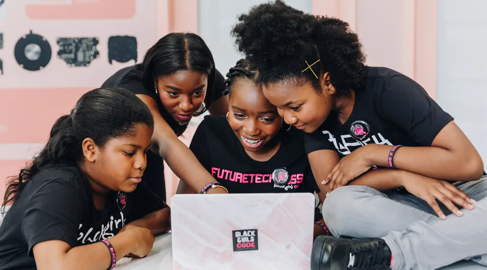

The Civil Rights Movement didn’t just change laws—it reshaped opportunities across every industry, including tech. As activists fought for racial justice, new doors began to open in education, employment, and innovation. This section explores how the push for civil rights helped diversify the tech world and laid the groundwork for greater equity in the digital age.
Tech Meets the Movement
Before Google searches and smartphone swipes, there was marching, organizing, and demanding justice. The Civil Rights Movement wasn’t just about changing laws—it was about changing futures. As activists fought for racial equality, they cracked open doors long closed in education, science, and technology.
Thanks to this movement, HBCUs expanded their STEM programs, and federal policies like affirmative action pushed schools and companies to reconsider who got a seat at the table. Innovators like Clarence “Skip” Ellis—first Black PhD in computer science—proved that diversity fuels progress.
The ripple effects of this movement still shape tech today—laying the groundwork for access, inclusion, and the fight for true equity in the digital age.
Key Milestones in Civil Rights and Technology
1950s-1960s: Seeds of Change
Brown v. Board of Education (1954): Ended legal segregation in schools, allowing more students of color access to science and tech education.
Civil Rights Act (1964): Outlawed employment discrimination, opening doors in STEM fields.
Formation of NASA and Inclusion of Black Engineers: Quiet but significant entry of Black professionals into government tech sectors.
The Civil Rights Movement sparked major changes in education, breaking legal barriers that had long excluded Black students from schools and universities. Landmark rulings like Brown v. Board of Education opened doors to STEM education, and agencies like NASA began hiring Black scientists and mathematicians—many from HBCUs. While the tech world remained overwhelmingly white and male, these early shifts proved that inclusion in science and technology was possible when access met opportunity.
Brown v. Board of Education, a landmark case that ended legal segregation in schools.
1970s-1980s: Growing Access
Clarence “Skip” Ellis (1972): First African American to earn a PhD in computer science.
HBCUs expand STEM: Institutions like Howard and Tuskegee lead the way in training Black engineers and programmers.
Affirmative Action in Higher Ed: Encourages more inclusive admissions in STEM-focused programs.
More Black students entered tech thanks to expanding STEM programs at HBCUs and policies like affirmative action. Pioneers like Clarence “Skip” Ellis, the first Black person to earn a PhD in computer science, showed what was possible. Progress was still slow, with limited funding and systemic barriers, but this era started building a real pathway for Black excellence in tech and higher education.
1990s-Present: New Frontiers
Rise of Black-led tech orgs: Groups like /dev/color and Black Girls Code empower underrepresented communities.
STEM Education Initiatives: Increased focus on diversity in coding bootcamps, public schools, and tech policy.
Tech Activism: Movements like #BlackTechTwitter and advocates pushing for equity in hiring, algorithmic bias, and startup funding.
Despite growth in the tech world, representation remained a challenge. So, communities took action. Organizations like Black Girls Code and /dev/color launched to close gaps in access, support, and visibility. Social media amplified voices pushing for equity in tech, continuing the Civil Rights legacy: not just breaking into the room, but changing how the room works.

Black Girls Code, a nonprofit helping young Black girls learn to code and thrive in tech.
The story of civil rights in tech is one of resilience, resistance, and rising potential. As students gained access to formerly segregated schools and HBCUs expanded their STEM programs, pioneers like Clarence “Skip” Ellis proved what was possible when given the chance. Federal efforts like affirmative action pushed institutions to rethink who belonged in science and tech, and organizations like NASA began hiring more Black scientists and mathematicians. These changes weren’t perfect or immediate—but they sparked a shift.
The Civil Rights Movement laid the foundation for a more inclusive tech industry, and its legacy continues to inspire a future where access, innovation, and equity go hand in hand.